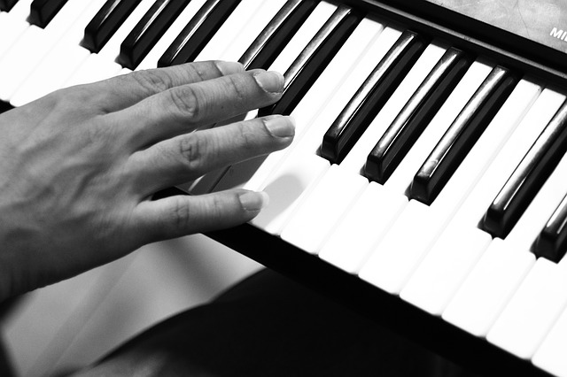
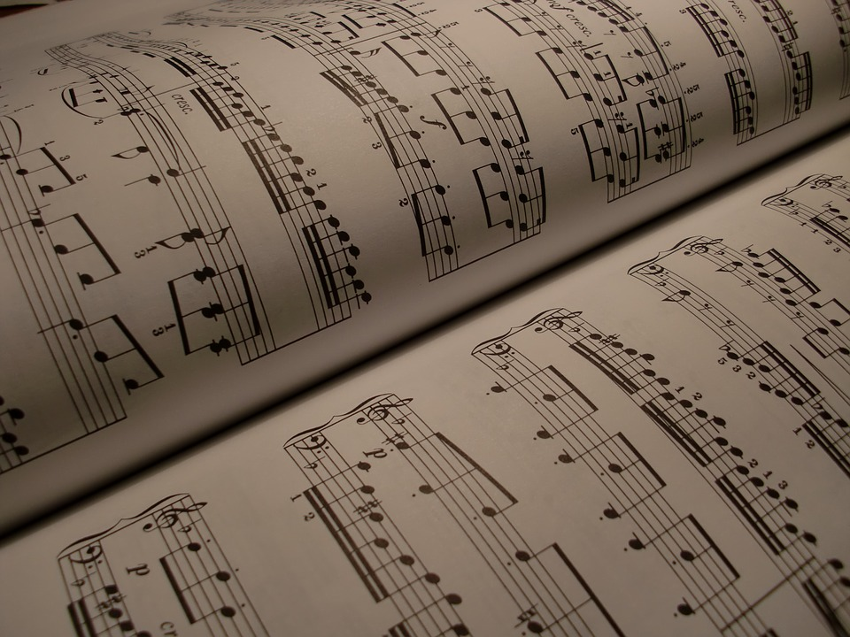

El término educación musical comprende procesos relacionados a la enseñanza y aprendizaje de la música, desde los instrumentos académicos, hasta los pedágogos, las instituciones y, por supuesto, los alumnos.
El propósito de este sitio, es brindar una guía para la autoenseñanza de la música, comprendiendo temas que van desde la formación de acordes, hasta la lectura de partituras, así como armonía y composición.
Lo primero a definir antes de comenzar, es la palabra música. Definimos a la música como una sucesión de sonidos modulados para recear al oído, combinar sonidos de la voz humana junto con instrumentos que al ejecutarse juntos, producen deleite y conmueven a las emociones.
La música es considerada como un lenguaje universal, se expresa de muchas maneras, su estructura se compone de pausas, acentos y cadencias y cada pieza se puede estructurar con exposición, un desarrollo y desenlace.
Como apoyo, más adelante se incorporarán enlaces y referencias a sitios especializados en la enseñanza de la música, como el conservatorio virtual de Sergio Blardony, y la escuela Juilliard en NY.
